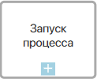
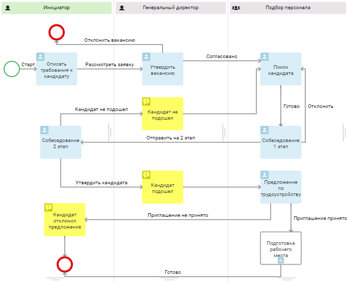
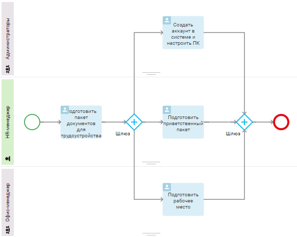
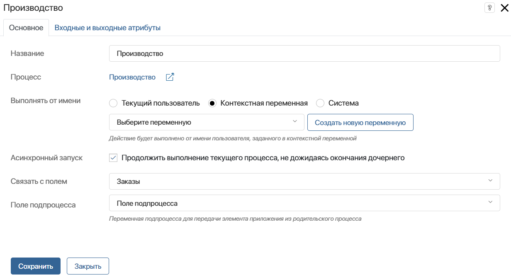
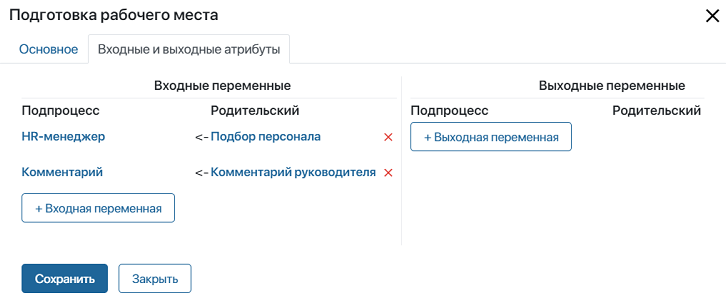
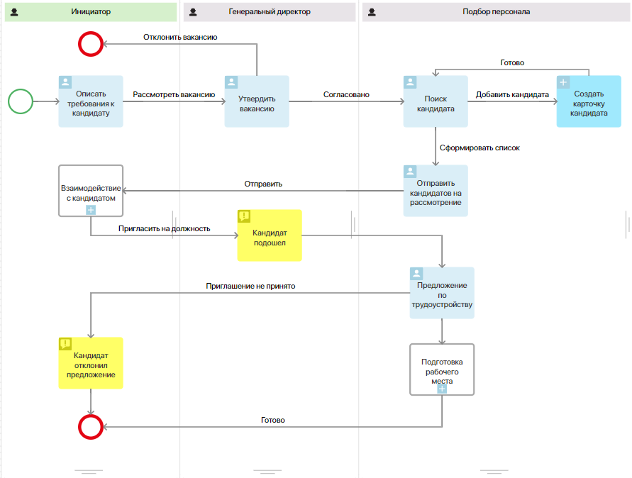
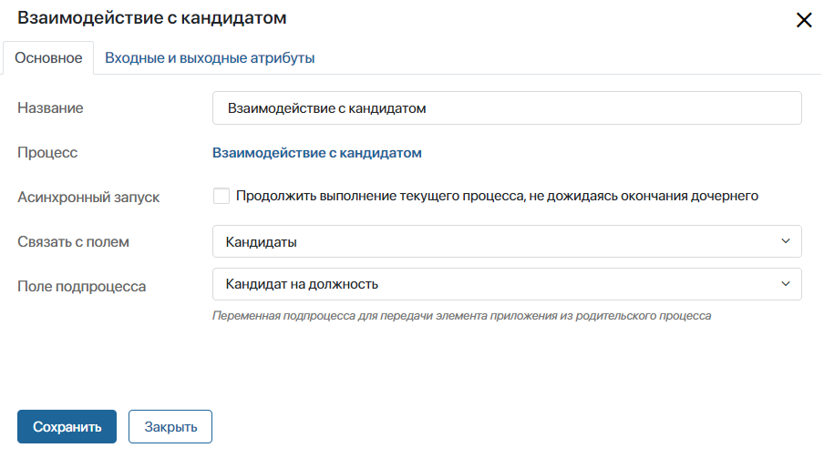

Блок Запуск процесса используется для декомпозиции и повышения наглядности схем. Он позволяет вызывать отдельный подпроцесс в рамках более крупного родительского бизнес-процесса.
Подпроцесс является частью родительского процесса и описывается отдельно. На его схеме создаются свои зоны ответственности, задачи, события и т. д., поэтому вы можете редактировать его, не затрагивая при этом основной процесс.
При запуске подпроцесса его название отобразится в карточке экземпляра родительского процесса на вкладке История. Вы можете перейти к карточке дочернего процесса и отследить его ход, нажав на название.
Размещая блок Запуск процесса на схеме, вы добавляете в основной процесс отсылку на комплексную задачу, которая будет выполняться в рамках подпроцесса. При этом в родительский процесс можно добавить несколько подпроцессов.
Кроме того, вы можете настроить блок таким образом, чтобы для каждого элемента приложения, переданного в основной процесс, запускались отдельные экземпляры подпроцесса.
Использование блока
Рассмотрим применение графического элемента в бизнес-процессе Подбор персонала. По ходу процесса после утверждения кандидата на должность будет запускаться подпроцесс подготовки рабочего места для нового сотрудника.

Процесс Подготовка рабочего места моделируется отдельно. В нём задаются все условия выполнения: задачи, зоны ответственности, события и т. д. Его схема выглядит следующим образом:

Если претенденты на должность проходят многоуровневый отбор с несколькими этапами собеседований и выполнением тестового задания, вы можете создать и добавить на схему процесса Подбор персонала еще один подпроцесс — Взаимодействие с кандидатом. Тогда схема основного процесса не будет перегружена множеством отдельных задач, отбор кандидата и утверждение сотрудника будут проходить в отдельном подпроцессе.
Настройка блока
Чтобы добавить и настроить блок, выполните следующие действия:
- Откройте схему родительского бизнес-процесса.
- С правой панели поля для моделирования перетащите на схему блок Запуск процесса и разместите его там, где потребуется запустить отдельный подпроцесс.
- Дважды нажмите на блок, чтобы перейти к его настройкам.
- Заполните необходимые поля на вкладках Основное и Входные и выходные атрибуты.
Вкладка «Основное»

- Название — укажите название блока, которое будет отображаться на схеме;
- Процесс — выберите опубликованный процесс, который будет вызываться в рамках родительского.
Если выбранный процесс не является системным и не включён в заблокированное решение, его можно открыть для редактирования в новой вкладке браузера. Для этого нажмите кнопку . Обратите внимание, процесс откроется только в режиме просмотра, если включён фича-флаг enableReadOnlyModeForDiagrammer. Для поставки SaaS обратитесь к менеджеру. Для поставки On-Premises подробнее об этом читайте в статьях «Изменение параметров On‑Premises Enterprise» и «Изменение параметров On‑Premises Standard»;
- Выполнять от имени — выберите, кто отобразится в карточке экземпляра в качестве инициатора процесса:
- Текущий пользователь — пользователь, запустивший экземпляр дочернего процесса;
- Контекстная переменная — выберите переменную типа Пользователи (один) из контекста процесса. Инициатором будет значиться сотрудник, который указан в значении переменной. Например, вы можете выбрать контекстную переменную с пользователем, в чьей зоне ответственности размещён дочерний процесс;
- Система — дочерний процесс будет выполняться от имени пользователя, назначенного на роль Супервизор системы.
- Асинхронный запуск — включите опцию, чтобы после старта дочернего процесса выполнение родительского продолжалось. В противном случае родительский процесс возобновится только после окончания дочернего;
- Связать с полем — свяжите запуск подпроцесса с переменной типа Приложение из основного процесса. В таком случае события, происходящие в рамках подпроцесса, например, возникшие ошибки или переназначение задачи, будут отображаться в ассоциированной ленте элемента связанного приложения. Если вы выберите в поле переменную с включенной опцией Несколько, вы сможете запускать экземпляры подпроцесса для нескольких выбранных элементов приложения. Подробнее об этом читайте в подразделе «Множественный запуск подпроцесса»;
- Поле подпроцесса — укажите переменную из подпроцесса, в которую необходимо передавать элемент приложения родительского процесса. Опция появляется, если в Связать с полем вы выбрали переменную, для которой включена опция Несколько.
Вкладка «Входные и выходные атрибуты»
Вы можете сопоставить контекстные переменные в родительском и дочернем процессах. Обратите внимание, сопоставить можно только переменные одного типа.

- Входные переменные — передаются из родительского процесса в дочерний при запуске последнего;
- Выходные переменные — передаются в родительский процесс из дочернего при завершении последнего. Обратите внимание, настроить выходные параметры нельзя, если вы включили Асинхронный запуск или настроили Множественный запуск подпроцесса.
В выходных атрибутах доступно поле Код выхода. Оно позволяет по завершении подпроцесса передать название его конечного события в основной процесс.
Допустим, в рамках оформления закупки есть подпроцесс подписания договора. В нем есть два конечных события: Оригинал получен и Оригинал не получен. Чтобы на следующем шаге основного процесса было известно, каким именно событием закончилось подписание договора, настройте поле Код выхода.
Для этого в контекст основного процесса добавьте поле типа Строка и назовите его, например, Результат. В столбце выходных переменных укажите переменную подпроцесса Код выхода, а в столбце родительского процесса — переменную Результат.
Множественный запуск подпроцесса
Вы можете запускать отдельные экземпляры подпроцесса с несколькими элементами приложения. Такой запуск называется множественным. Чтобы его настроить, в блоке Запуск процесса указать переменную с включённой опцией Несколько.
Для примера изменим схему процесса Подбор персонала. Теперь сотрудник по персоналу будет искать кандидатов и создавать карточки для каждого из них в приложении Кандидаты. Затем в задаче отправки кандидатов на рассмотрение он сформирует список претендентов на должность — добавит на форму задачи несколько элементов приложения Кандидаты. При нажатии на кнопку Отправить список кандидатов будет передан на рассмотрение. С каждым добавленным элементом приложения запустится отдельный экземпляр подпроцесса Взаимодействие с кандидатом.
По ходу подпроцесса соискатель будет проходить собеседования и выполнять тестовые задания. Не подошедшие претенденты будут отклонены, а для одобренного кандидата будет создана карточка сотрудника. Затем продолжится родительский процесс.

Чтобы настроить множественный запуск экземпляров подпроцесса:
- На вкладке Контекст создадим переменную. Укажем тип Приложение, выберем приложение Кандидаты и включим опцию Несколько.
- После поиска кандидатов и создания карточек для них разместим для сотрудника по персоналу задачу Отправить кандидатов на рассмотрение. Откроем её настройки и вынесем на форму множественную переменную Кандидаты.
Задача необходима, чтобы сотрудник при её выполнении смог указать в переменной несколько элементов приложения, созданных в предыдущей задаче процесса. Тем самым он сформирует список кандидатов для отправки на рассмотрение. Передать в контекст процесса несколько элементов можно также, разместив на схеме блок Скрипт. Подробнее о скриптах, читайте в справке ELMA365 TS SDK.
- После задачи Отправить кандидатов на рассмотрение разместим блок Запуск процесса. В его настройках укажем процесс Взаимодействие с кандидатом и выключим опцию Асинхронный запуск, чтобы родительский процесс приостанавливался до окончания дочернего.
- В поле Связать с полем укажем множественную переменную Кандидаты, добавленную на шаге 1, а также выберем свойство подпроцесса, в которое будут передаваться элементы приложения из родительского процесса, в нашем случае это созданные кандидаты. Сохраним настройки.

Таким образом в ходе родительского процесса для каждого элемента приложения Кандидаты, указанного в задаче Отправить кандидатов на рассмотрение будет запускаться подпроцесс Взаимодействие с кандидатом. После его завершения родительский процесс продолжится согласно настроенной схеме.
Обратите внимание, одновременно можно запустить не более 100 экземпляров подпроцесса. Это помогает избежать бесконечного исполнения одного шага. Чтобы обойти это ограничение, в процессе можно настроить исключающий шлюз и таймер для постепенного запуска экземпляров. Подробнее об этом читайте в статье «Возможные ошибки по ходу бизнес-процесса».